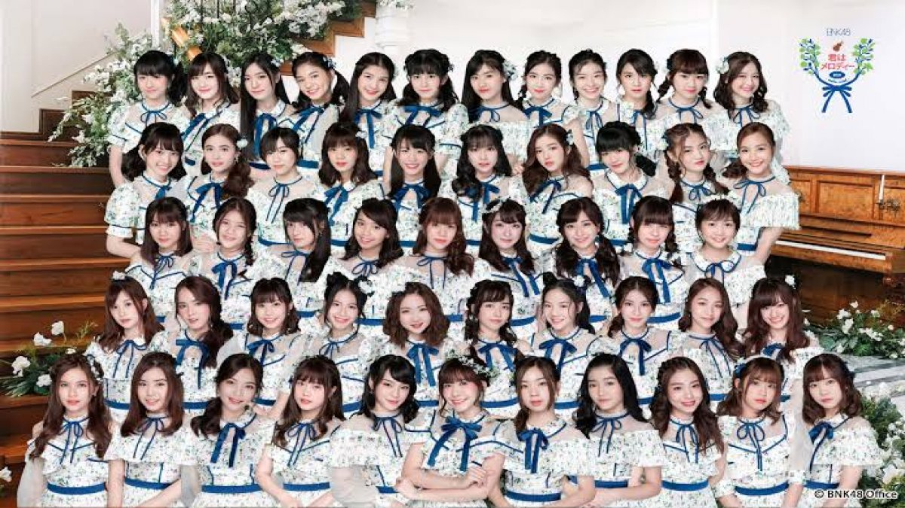

|
 |
 |
ประวัติ BNK48
BNK48 ไอดอลหญิงของประเทศไทยและเป็นเป็นวงไอดอลรุ่นน้องของ AKB48 ลำดับที่2
วงไอดอลสัญชาติญี่ปุ่นที่สร้างชื่อเสียง
โด่งดังระดับโลก ภายใต้แนวคิดร่วมกันคือ "ไอดอลที่คุณสามารถไปพบได้" ในสังกัด BNK48 Official
วงเริ่มเปิดรับสมัครสมาชิกครั้งแรกเมื่อกลางปี พ.ศ. 2559 และเปิดตัวอย่างเป็นทางการเมื่อวันที่ 2 มิถุนายน พ.ศ. 2560
พร้อมกับซิงเกิลแรกในชื่อ อยากจะได้พบเธอ ด้วยสมาชิก 30 คน
ทั้งนี้ สมาชิกของวงนั้นมีจำนวนไม่แน่นอนเนื่องจากมีการเปิดรับสมาชิกรุ่นใหม่และมีการจบการศึกษาอยู่ตลอดเวลา
ปัจจุบันวงมีสมาชิกทั้งหมด 51 คน
